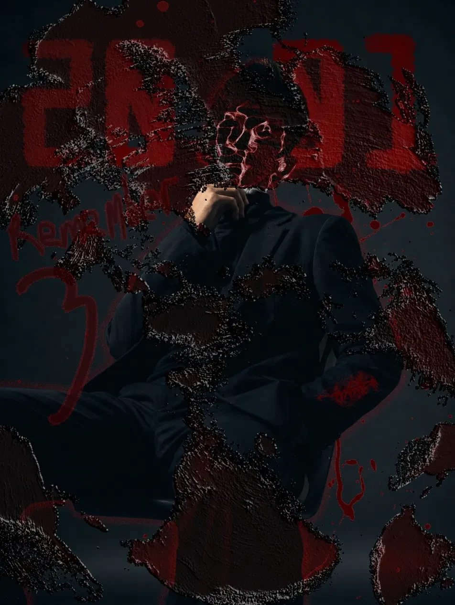

OPEN STUDY ↗
01
RED
STATIC
Visual direction / texture / portrait composition
2026Visual portfolio built around image, typography, motion and a little controlled chaos.
EXPLORE↓A portfolio should not feel like a folder. It should feel like a point of view.
This direction takes the raw, high-contrast energy from the references you supplied and turns it into an interactive editorial system: oversized type, broken grids, tactile image treatment, red signal accents and motion that reacts to the pointer.

Visual direction / texture / portrait composition
2026Photography / identity / atmosphere
For collaborations, visual experiments, web builds or anything that needs a stronger point of view.
DM / JO.ZGRF↗